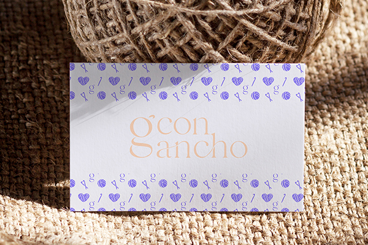

Con Gancho
Identidad visual. Proyecto personal.
Con gancho es una pequeña empresa que vende prendas de ropa confeccionadas con la técnica del ganchillo y con materiales 100% naturales.
El diseño de este branding se construye sobre los conceptos de alianza y cuidado, tanto en el proceso como en los acabados, todo esto dándole importancia a los valores de respeto con el medio ambiente, delicadeza y unidad.